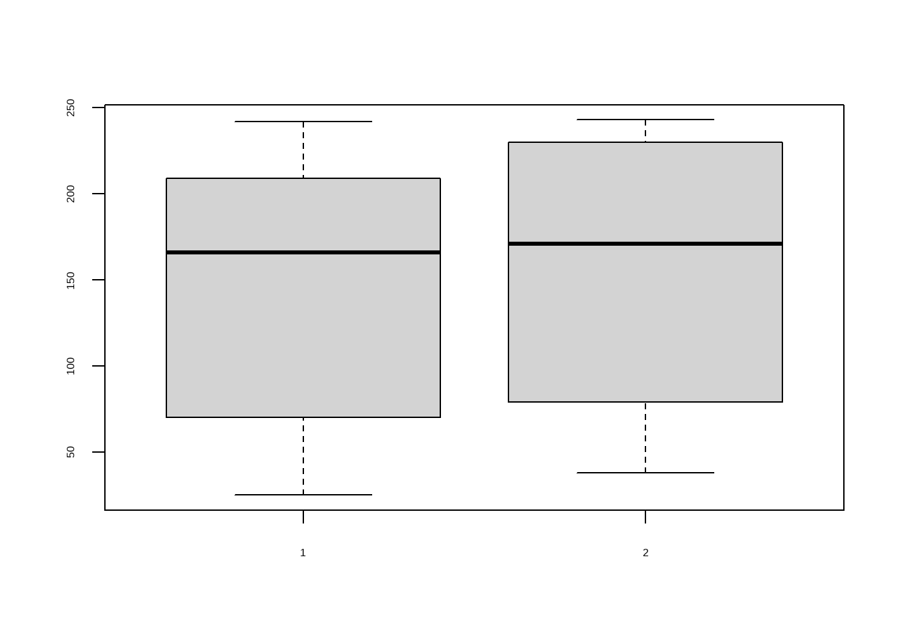
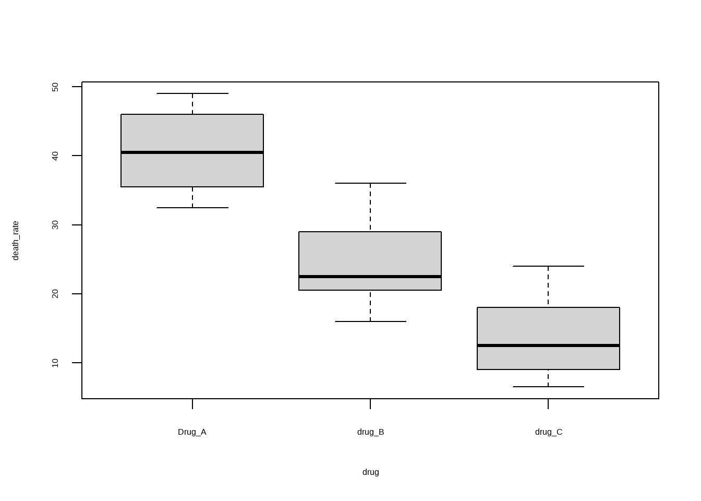
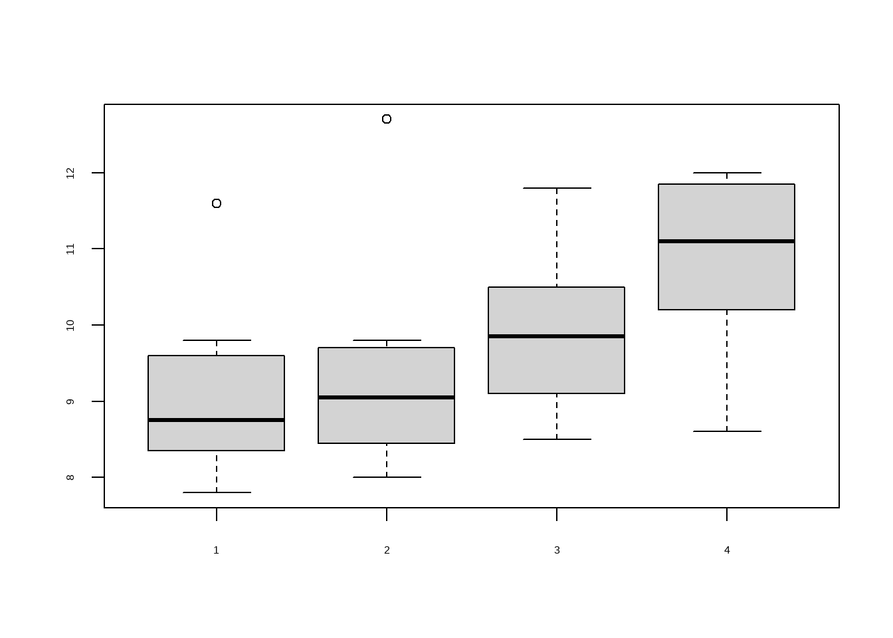

test1<-c(60,142,195,80,242,220,190,25,198,38,236,95)
test2<-c(76,152,243,82,240,220,205,38,243,44,190,100)5 秩转换的非参数检验
非参数检验对总体分布不作严格假定，又称任意分布检验（distribution-free test），它直接对总体分布作假设检验。非参数检验的优点是它不受总体分布的限制，适用范围广，本章介绍常用的秩转换（rank-transformation）的非参数检验，是推断一个总体表达分布位置的中位数M（非参数）和已知M0、两个或多个总体的分布是否有差别。秩转换的非参数检验是先将数值变量资料从小到大、等级资料从弱到强或从强到弱转换成秩后，再计算检验统计量，其特点是假设检验的结果对总体分布的形状差别不敏感，只对总体分布的位置差别敏感。由于秩统计量的分布与原数据总体分布类型无关，具有较好的稳健性，可用于任何分布类型的资料。
- 对于计量资料，若不满足正态和方差齐性条件，这时小样本资料选t检验或F检验是不妥的，而选秩转换的非参数检验是恰当的；
- 对于分布不知是否正态的小样本资料，为保险起见，宜选秩转换的非参数检验；
- 对于一端或两端是不确定数值（如<20岁、≥65岁等）的资料，不管是否正态分布，只能选秩转换的非参数检验。
- 对于等级资料，若选择行×列表资料的χ2检验，只能推断构成比差别，而选择秩转换的非参数检验，可推断等级强度差别。
- 如果已知计量资料满足（或近似满足）t检验或F检验条件，选检验或F检验，若选秩转换的非参数检验，会降低检验效能。
警告注意
wilcox.test在R4.4.0及以后不再支持在公式形式中使用paired参数，所以如果你的R版本在4.4.0及以后的，在公式形式中使用paired参数会得到以下报错：cannot use 'paired' in formula method。逆天更新！！
5.1 配对样本比较的Wilcoxon符号秩检验
英文名字：wilcoxon signed-rank test，即符号秩检验。
使用课孙振球版《医学统计学》第4版例8-1的数据。
对12份血清分别用原方法（检测时间20分钟）和新方法（检测时间10分钟）测谷丙转氨酶，问两法所得结果有无差别？
两列数据，和配对t检验的数据结构完全一样。
简单看一下数据情况：
boxplot(test1,test2)
进行秩和检验：
wilcox.test(test1,test2,paired = T,
,exact = F, correct=F)
##
## Wilcoxon signed rank test
##
## data: test1 and test2
## V = 11.5, p-value = 0.05581
## alternative hypothesis: true location shift is not equal to 0
#`exact=F`表示使用正态近似计算p值（适用于大样本或存在结值的情况，本例有结值）
#当使用正态近似时（如大样本或有 ties），R默认启用连续性校正
#这是为了提高小到中等样本下p值的准确性
#尤其在样本量n<30时，校正效果明显
#但SPSS不是这样，为了保持一致，选择`correct=F`在统计学（尤其是非参数检验，如Wilcoxon秩和检验、符号秩检验）中，“结”（ties）指的是数据中存在两个或多个观测值完全相等的情况。
结果和书中一致！P>0.05（P值和SPSS也是一致的），不拒绝H0，还不能认为两法测谷丙转氨酶结果有差别。
结果中的
V和书中的T不是一个东西，R中的V是正秩和，是Wilcoxon符号秩检验的原始统计量之一，书中的T是任意取正秩和或者负秩和。
SPSS给出的结果中是用的Z值，下面是计算T值和Z值：
# 剔除差值为0的
d <- test1 - test2
d_nz <- d[abs(d) > .Machine$double.eps * 10]
n <- length(d_nz)
d_rounded <- round(d_nz, digits = 3)
abs_d_rounded <- abs(d_rounded)
# 编秩（自动平均秩）
ranks <- rank(abs_d_rounded,ties.method="average")
# 正秩和（W+）与负秩和（W-）
W_plus <- sum(ranks[d_rounded > 0])
W_minus <- sum(ranks[d_rounded < 0])
# 计算Z值（无连续性校正）
mu_W <- n * (n + 1) / 4 # 期望
tie_term <- sum(table(abs_d_rounded)^3 - table(abs_d_rounded)) # tie 校正项
var_W <- n * (n + 1) * (2 * n + 1) / 24 - tie_term / 24 # 方差（带 tie 校正）
sigma_W <- sqrt(var_W) # 标准差
Z <- (W_plus - mu_W) / sigma_W # Z 值（无连续性校正）
cat("正秩和 (W⁺) :", W_plus, "\n")
## 正秩和 (W⁺) : 11.5
cat("负秩和 (W⁻) :", W_minus, "\n")
## 负秩和 (W⁻) : 54.5
cat("Z 值 :", round(Z, 4), "\n")
## Z 值 : -1.9135下面再看一个单样本中位数和总体中位数的比较。孙振球版《医学统计学》第4版例8-2。
已知某地正常人尿氟含量的中位数为45.30μmol/L。今在该地某厂随机抽取12名工人，测得尿氟含量如下。问该厂工人的尿氟含量是否高于当地正常人的尿氟含量？
test <- c(44.21,45.30,46.39,49.47,51.05,53.16,
53.26,54.37,57.16,67.37,71.05,87.37)
#不加`digits.rank=7`你会得到错误的V（64），浮点数精度问题，太坑了！
wilcox.test(test,mu=45.30,exact = F,correct = F,
digits.rank = 7)
##
## Wilcoxon signed rank test
##
## data: test
## V = 64.5, p-value = 0.005077
## alternative hypothesis: true location is not equal to 45.3本例是单侧检验，所以结果的P值要除以2（或者使用alternative="g"），结果和书中一样，P<0.005，拒绝H0，接受H1，可认为该工厂工人的尿氟含量高于当地正常人的尿氟含量。
计算T值和Z值：
mu <- 45.30
# 剔除差值为0的
d <- test - mu
d_nz <- d[abs(d) > .Machine$double.eps * 10]
n <- length(d_nz)
d_rounded <- round(d_nz, digits = 3)
abs_d_rounded <- abs(d_rounded)
# 编秩（自动平均秩）
ranks <- rank(abs_d_rounded,ties.method="average")
# 正秩和（W+）与负秩和（W-）
W_plus <- sum(ranks[d_rounded > 0])
W_minus <- sum(ranks[d_rounded < 0])
# 计算Z值（无连续性校正）
mu_W <- n * (n + 1) / 4 # 期望
tie_term <- sum(table(abs_d_rounded)^3 - table(abs_d_rounded)) # tie 校正项
var_W <- n * (n + 1) * (2 * n + 1) / 24 - tie_term / 24 # 方差（带 tie 校正）
sigma_W <- sqrt(var_W) # 标准差
Z <- (W_plus - mu_W) / sigma_W # Z 值（无连续性校正）
cat("正秩和 (W⁺) :", W_plus, "\n")
## 正秩和 (W⁺) : 64.5
cat("负秩和 (W⁻) :", W_minus, "\n")
## 负秩和 (W⁻) : 1.5
cat("Z 值 :", round(Z, 4), "\n")
## Z 值 : 2.8035书中取的T=1.5。
5.2 两独立样本比较的Wilcoxon秩和检验
英文名字：wilcoxon-rank-sum-test，即秩和检验。注意和单样本（和配对样本）的符号秩检验相区别！
使用孙振球版《医学统计学》第4版例8-3的数据。
对10例肺癌患者和12例矽肺0期工人用X线片测量肺门横径右侧距RD值（cm），问肺癌患者的RD值是否高于矽肺0期工人的RD值？
RD1<-c(2.78,3.23,4.20,4.87,5.12,6.21,7.18,8.05,8.56,9.60)
RD2<-c(3.23,3.50,4.04,4.15,4.28,4.34,4.47,4.64,4.75,4.82,4.95,5.10)进行两独立样本比较的Wilcoxon秩和检验，和两样本t检验的数据格式完全一样！
#为了和SPSS保持一致，没加alternative = "g"
wilcox.test(RD1,RD2,paired = F, correct = F, exact = F)
##
## Wilcoxon rank sum test
##
## data: RD1 and RD2
## W = 86.5, p-value = 0.08049
## alternative hypothesis: true location shift is not equal to 0默认是双侧检验的结果，P值为0.080490，和SPSS结果一样，本例是单侧检验，所以P值要除以2，P值约为0.04<0.05，拒绝H0，接受H1，可以认为肺癌患者的RD值高于矽肺0期工人的RD值。
结果中的W值其实是RD1的U值（Mann-Whitney U），你如果调换一下RD1和RD2的顺序，那么你会得到RD2的U值（33.5，这也是SPSS中的结果，SPSS会默认报告较小的那个U值），所以这里的W值其实是第一组的U值！
下面是分别计算两组的秩和、U值、Z值，稍微有点麻烦：
# 1. 输入数据
RD1 <- c(2.78,3.23,4.20,4.87,5.12,6.21,7.18,8.05,8.56,9.60)
RD2 <- c(3.23,3.50,4.04,4.15,4.28,4.34,4.47,4.64,4.75,4.82,4.95,5.10)
# 2. 准备数据框并计算秩
# 将数据合并，方便处理结（ties）
data_combined <- c(RD1, RD2)
group <- c(rep("RD1", length(RD1)), rep("RD2", length(RD2)))
# 计算秩 (R默认处理结的方法是'average'，与SPSS一致)
ranks <- rank(data_combined)
# 3. 计算秩和 (SPSS中的 "Wilcoxon W" 或者是各组 Rank Sum)
rank_sum_1 <- sum(ranks[group == "RD1"])
rank_sum_2 <- sum(ranks[group == "RD2"])
# 4. 计算 Mann-Whitney U 值
n1 <- length(RD1)
n2 <- length(RD2)
U1 <- rank_sum_1 - n1 * (n1 + 1) / 2
U2 <- rank_sum_2 - n2 * (n2 + 1) / 2
U_stat <- min(U1, U2) # SPSS报告较小的U
# 5. 计算 Z 值 (渐近正态近似)
# 均值
mu_U <- n1 * n2 / 2
# 标准差 (包含对结ties的校正)
# 统计结的信息
N <- n1 + n2
ties <- table(data_combined)
# 计算校正项
tie_correction <- sum(ties^3 - ties) / (N * (N - 1))
sd_U <- sqrt((n1 * n2 / 12) * ((N + 1) - tie_correction))
# 计算Z，不使用连续性校正
Z_score <- (U_stat - mu_U) / sd_U
# 6. 计算 P 值 (双尾)
p_value <- 2 * pnorm(abs(Z_score), lower.tail = FALSE)
# 打印结果 (模拟SPSS输出)
cat("=== R 复现 SPSS 结果 ===\n")
## === R 复现 SPSS 结果 ===
cat("RD1 秩和 (Rank Sum):", rank_sum_1, "\n")
## RD1 秩和 (Rank Sum): 141.5
cat("RD2 秩和 (Rank Sum):", rank_sum_2, "\n")
## RD2 秩和 (Rank Sum): 111.5
cat("------------------------\n")
## ------------------------
cat("Mann-Whitney U :", U_stat, "\n")
## Mann-Whitney U : 33.5
cat("Wilcoxon W :", ifelse(rank_sum_1 < rank_sum_2, rank_sum_1, rank_sum_2), "(SPSS通常显示较小的秩和，或者对应于较小U值的秩和)\n")
## Wilcoxon W : 111.5 (SPSS通常显示较小的秩和，或者对应于较小U值的秩和)
cat("Z 值 :", round(Z_score, 3), "\n")
## Z 值 : -1.748
cat("渐近显著性 (双尾) :", round(p_value, 6), "\n")
## 渐近显著性 (双尾) : 0.08049下面是频数资料和等级资料的两样本比较：计量资料为频数表资料，是按数量区间分组；等级资料是按等级分组
孙振球版《医学统计学》第4版例8-4：39名吸烟工人和40名不吸烟工人的碳氧血红蛋白HbCO（%）含量如下。问吸烟工人的HbCO（%）含量是否高于不吸烟工人的HbCO（%）含量？
这是一个等级资料。
mat8_4 <- matrix(c(1,8,16,10,4, 2,23,11,4,0), ncol = 2,
dimnames = list(c("很低","低","中","偏高","高"),
c("吸烟", "不吸烟")))
mat8_4
## 吸烟 不吸烟
## 很低 1 2
## 低 8 23
## 中 16 11
## 偏高 10 4
## 高 4 0书中的数据是一个频数表的格式，但是R中做秩和检验需要原始数据的格式，而且等级数据需要变成用数字表示，且考虑到目前R对formula的支持不好，所以最好是直接变成两个向量（和上一个例题一样的格式），一个吸烟的，一个不吸烟的。
# 用数字1~5分别表示："很低","低","中","偏高","高"
# 吸烟工人数据
group_smoke <- c(rep(1, 1), # 1个"很低"
rep(2, 8), # 8个"低"
rep(3, 16), # 16个"中"
rep(4, 10), # 10个"偏高"
rep(5, 4)) # 4个"高"
# 不吸烟工人数据
group_nonsmoke <- c(rep(1, 2),
rep(2, 23),
rep(3, 11),
rep(4, 4),
rep(5, 0))进行等级资料比较的Wilcoxon秩和检验：
wilcox.test(group_smoke, group_nonsmoke,
paired = FALSE,
exact = F,
correct = FALSE)
##
## Wilcoxon rank sum test
##
## data: group_smoke and group_nonsmoke
## W = 1137, p-value = 0.0002137
## alternative hypothesis: true location shift is not equal to 0本例是单侧检验，因此P值需要除以2，结果P<0.0005，拒绝H0，接受H1，可认为吸烟工人的HbCO（%）含量高于不吸烟工人的HbCO（%）含量。
下面是计算各组秩和、U值、Z值：
# 1. 输入数据，就是group_smoke和group_nonsmoke
# 2. 准备数据框并计算秩
# 将数据合并，方便处理结（ties）
data_combined <- c(group_smoke, group_nonsmoke)
group <- c(rep("group_smoke", length(group_smoke)),
rep("group_nonsmoke", length(group_nonsmoke)))
# 计算秩 (R默认处理结的方法是'average'，与SPSS一致)
ranks <- rank(data_combined)
# 3. 计算秩和 (SPSS中的 "Wilcoxon W" 或者是各组 Rank Sum)
rank_sum_1 <- sum(ranks[group == "group_smoke"])
rank_sum_2 <- sum(ranks[group == "group_nonsmoke"])
# 4. 计算 Mann-Whitney U 值
n1 <- length(group_smoke)
n2 <- length(group_nonsmoke)
U1 <- rank_sum_1 - n1 * (n1 + 1) / 2
U2 <- rank_sum_2 - n2 * (n2 + 1) / 2
U_stat <- min(U1, U2) # SPSS报告较小的U
# 5. 计算 Z 值 (渐近正态近似)
# 均值
mu_U <- n1 * n2 / 2
# 标准差 (包含对结ties的校正)
# 统计结的信息
N <- n1 + n2
ties <- table(data_combined)
# 计算校正项
tie_correction <- sum(ties^3 - ties) / (N * (N - 1))
sd_U <- sqrt((n1 * n2 / 12) * ((N + 1) - tie_correction))
# 计算Z，不使用连续性校正
Z_score <- (U_stat - mu_U) / sd_U
# 6. 计算 P 值 (双尾)
p_value <- 2 * pnorm(abs(Z_score), lower.tail = FALSE)
# 打印结果 (模拟SPSS输出)
cat("=== R 复现 SPSS 结果 ===\n")
## === R 复现 SPSS 结果 ===
cat("RD1 秩和 (Rank Sum):", rank_sum_1, "\n")
## RD1 秩和 (Rank Sum): 1917
cat("RD2 秩和 (Rank Sum):", rank_sum_2, "\n")
## RD2 秩和 (Rank Sum): 1243
cat("------------------------\n")
## ------------------------
cat("Mann-Whitney U :", U_stat, "\n")
## Mann-Whitney U : 423
cat("Wilcoxon W :", ifelse(rank_sum_1 < rank_sum_2, rank_sum_1, rank_sum_2), "(SPSS通常显示较小的秩和，或者对应于较小U值的秩和)\n")
## Wilcoxon W : 1243 (SPSS通常显示较小的秩和，或者对应于较小U值的秩和)
cat("Z 值 :", round(Z_score, 3), "\n")
## Z 值 : -3.702
cat("渐近显著性 (双尾) :", round(p_value, 6), "\n")
## 渐近显著性 (双尾) : 0.000214
注释补充说明
Mann-Whitney U 检验 和 Wilcoxon 秩和检验（Wilcoxon rank-sum test）在两独立样本情况下，是完全等价的检验方法——它们检验相同的零假设，得出相同的 p 值，只是统计量的定义不同。1945年：Frank Wilcoxon提出两种方法：符号秩检验（用于配对）和秩和检验（用于两独立样本）；1947 年：Mann & Whitney 重新表述了秩和检验，得名 Mann-Whitney U 检验。所以：“Wilcoxon秩和检验”和“Mann-Whitney U检验”是同一件事，而“Wilcoxon符号秩检验”是另一件事。
5.3 完全随机设计多个样本比较的 Kruskal-Wallis H 检验
上面是两样本的非参数检验，K-W-H是多个独立样本的非参数检验。
5.3.1 多个独立样本比较的kruskal-wallis H检验
孙振球《医学统计学》第4版例8-5。
用3种药物杀灭钉螺，每批用200只活钉螺，用药后清点每批钉螺的死亡数、再计算死亡率（%），结果如下。问3种药物杀灭钉螺的效果有无差别？
rm(list = ls())
death_rate <- c(32.5,35.5,40.5,46,49,16,20.5,22.5,29,36,6.5,
9.0,12.5,18,24)
drug <- rep(c("Drug_A","drug_B","drug_C"),each=5)
data8_5 <- data.frame(death_rate,drug)
str(data8_5)
## 'data.frame': 15 obs. of 2 variables:
## $ death_rate: num 32.5 35.5 40.5 46 49 16 20.5 22.5 29 36 ...
## $ drug : chr "Drug_A" "Drug_A" "Drug_A" "Drug_A" ...数据一共2列，第1列是死亡率，第2列是药物（3种）。
简单看下数据：
boxplot(death_rate ~ drug, data = data8_5)
进行 Kruskal-Wallis H 检验：
kruskal.test(death_rate ~ drug, data = data8_5)
##
## Kruskal-Wallis rank sum test
##
## data: death_rate by drug
## Kruskal-Wallis chi-squared = 9.74, df = 2, p-value = 0.007673拒绝H0，接受H1，可认为3种药物杀灭钉螺的效果不同。
孙振球《医学统计学》第4版例8-6。
比较小白鼠接种3种不同菌型伤寒杆菌9D、11C和DSC1后存活日数。问小白鼠接种3种不同菌型伤寒杆菌的存活日数有无差别？
data8_6 <- data.frame(days=c(2,2,2,3,4,4,4,5,7,7,
5,5,6,6,6,7,8,10,12,
3,5,6,6,6,7,7,9,10,11,11),
type=c(rep("9D",10),rep("11C",9),rep("DSC",11)))
head(data8_6)
## days type
## 1 2 9D
## 2 2 9D
## 3 2 9D
## 4 3 9D
## 5 4 9D
## 6 4 9D进行 Kruskal-Wallis H 检验：
kruskal.test(days ~ type, data = data8_6)
##
## Kruskal-Wallis rank sum test
##
## data: days by type
## Kruskal-Wallis chi-squared = 9.9405, df = 2, p-value = 0.006941结果和课本一致（课本中Hc=9.97）。
下面是频数资料和等级资料的多个样本比较，孙振球《医学统计学》第4版例8-7。
4种疾病患者痰液内嗜酸性粒细胞的检查结果如下。问4种疾病患者痰液内的嗜酸性粒细胞有无差别？
mat8_7 <- matrix(c(0,2,9,6,3,5,5,2,5,7,3,2,3,5,3,0), ncol = 4,
dimnames = list(c("-","+","++","+++"),
c("支气管扩张", "肺水肿","肺癌",
"病毒性呼吸道感染")))
mat8_7
## 支气管扩张 肺水肿 肺癌 病毒性呼吸道感染
## - 0 3 5 3
## + 2 5 7 5
## ++ 9 5 3 3
## +++ 6 2 2 0先把频数表格式变成函数能够接受的格式，然后进行检验：
# 获取行名和列名
sev_levels <- rownames(mat8_7) # "-", "+", "++", "+++"
diseases <- colnames(mat8_7) # 四种疾病
# 构建空向量
severity <- c()
group <- c()
for (j in seq_along(diseases)) {
for (i in seq_along(sev_levels)) {
freq <- mat8_7[i, j]
if (freq > 0) {
severity <- c(severity, rep(sev_levels[i], freq))
group <- c(group, rep(diseases[j], freq))
}
}
}
# 转为有序因子并数值化
severity_factor <- factor(severity, levels = sev_levels, ordered = TRUE)
y <- as.numeric(severity_factor) # "-"=1, "+"=2, "++"=3, "+++"=4
# 执行检验
kruskal.test(y ~ group)
##
## Kruskal-Wallis rank sum test
##
## data: y by group
## Kruskal-Wallis chi-squared = 15.506, df = 3, p-value = 0.001432P<0.005，拒绝H0，接受H1，可认为4种疾病患者痰液内的嗜酸性粒细胞有差别。
结果中的Kruskal-Wallis chi-squared，在写文章时，建议写Kruskal-Wallis H，别写chi-squared。
5.3.2 kruskal-Wallis H检验后的多重比较
孙振球《医学统计学》第4版例8-8使用的是例8-6的数据。
书中使用的Nemenyi检验，我们使用非参数检验的全能R包：PMCMRplus实现。
library(PMCMRplus)
# 首先要把分类变量因子化
data8_6$type <- factor(data8_6$type)下面就可以使用 Nemenyi检验了。
# 也可以把kwh检验的结果作为输入
res <- kwAllPairsNemenyiTest(days ~ type, data = data8_6,dist = "Chisquare")
## Warning in kwAllPairsNemenyiTest.default(c(2, 2, 2, 3, 4, 4, 4, 5, 7, 7, : Ties
## are present. Chi-sq was corrected for ties.
summary(res)
## X^2 value Pr(>|X^2|)
## 9D - 11C == 0 6.696 0.035158 *
## DSC - 11C == 0 0.016 0.992074
## DSC - 9D == 0 8.127 0.017185 *得到卡方值和书中有细微差别，但是结论是一样的。可认为小白鼠接种11C的存活日数高于接种9D的存活日数；可认为小白鼠接种DSC1的存活日数高于接种9D的存活日数；尚不能认为小白鼠接种11C与接种DSC1的存活日数有差别。
5.4 随机区组设计多个样本比较的Friedman M检验
5.4.1 多个相关样本比较的Friedman M检验
Friedman M 检验是专门用于随机区组设计的非参数检验方法。
孙振球《医学统计学》第4版例8-9。
8名受试对象在相同实验条件下分别接受4种不同频率声音的刺激，他们的反应率（%）资料如下。问4种频率声音刺激的反应率是否有差别？
data8_9 <- foreign::read.spss("datasets/例08-09.sav", to.data.frame = T)
str(data8_9)
## 'data.frame': 8 obs. of 4 variables:
## $ a: num 8.4 11.6 9.4 9.8 8.3 8.6 8.9 7.8
## $ b: num 9.6 12.7 9.1 8.7 8 9.8 9 8.2
## $ c: num 9.8 11.8 10.4 9.9 8.6 9.6 10.6 8.5
## $ d: num 11.7 12 9.8 12 8.6 10.6 11.4 10.8
## - attr(*, "codepage")= int 65001数据一共4列，分别是4种不同频率下的反应率。
简单看下数据：
boxplot(data8_9$a,data8_9$b,data8_9$c,data8_9$d)
进行 Friedman M 检验前先把数据格式转换一下：
mat8_9 <- as.matrix(data8_9) # 变成矩阵
mat8_9
## a b c d
## [1,] 8.4 9.6 9.8 11.7
## [2,] 11.6 12.7 11.8 12.0
## [3,] 9.4 9.1 10.4 9.8
## [4,] 9.8 8.7 9.9 12.0
## [5,] 8.3 8.0 8.6 8.6
## [6,] 8.6 9.8 9.6 10.6
## [7,] 8.9 9.0 10.6 11.4
## [8,] 7.8 8.2 8.5 10.8进行 Friedman M 检验：
friedman.test(mat8_9)
##
## Friedman rank sum test
##
## data: mat8_9
## Friedman chi-squared = 15.152, df = 3, p-value = 0.001691P<0.05，拒绝H0，接受H1，可认为4种频率声音刺激的反应率有差别。
data8_9是一个很典型的宽数据，我们也可以把它变成长数据再进行Friedman M 检验：
library(dplyr,quietly = T)
library(tidyr)
data8_9_long <- data8_9 %>%
mutate(block = row_number()) %>%
pivot_longer(cols = - block,names_to = "groups",values_to = "response")
head(data8_9_long)
## # A tibble: 6 × 3
## block groups response
## <int> <chr> <dbl>
## 1 1 a 8.4
## 2 1 b 9.6
## 3 1 c 9.8
## 4 1 d 11.7
## 5 2 a 11.6
## 6 2 b 12.7第一列是受试者，也就是区组，第二列是组别，第三列是反应率，这样的数据格式也能进行检验：
friedman.test(y=data8_9_long$response,groups = data8_9_long$groups,
blocks = data8_9_long$block)
##
## Friedman rank sum test
##
## data: data8_9_long$response, data8_9_long$groups and data8_9_long$block
## Friedman chi-squared = 15.152, df = 3, p-value = 0.001691结果是一模一样的。
5.4.2 多个相关样本两两比较的q检验
当经过多个相关样本比较的Friedman M检验拒绝H0，接受H1，认为多个总体分布位置不全相同时，若要进一步推断是哪两两总体分布位置不同，可用q检验。这个q检验，根据书中给出的公式，应该是Conover的q检验。
孙振球《医学统计学》第4版例8-10。用的是例8-9的数据。
使用非参数检验的全能R包：PMCMRplus实现这个检验即可：
library(PMCMRplus)
res <- frdAllPairsConoverTest(y=data8_9_long$response,
groups = data8_9_long$groups,
blocks = data8_9_long$block)
#toTidy(res)
summary(res)
## q value Pr(>|q|)
## b - a == 0 -2.123 0.43680261
## c - a == 0 -5.307 0.00100476 **
## d - a == 0 -7.854 1.6722e-07 ***
## c - b == 0 -3.184 0.10962571
## d - b == 0 -5.732 0.00029516 ***
## d - c == 0 -2.547 0.27265664这个结果的q值和P值和书中基本一致。
可认为频率A、B和频率C、D声音刺激的反应率有差别；尚不能认为频率A和频率B、频率C和频率D声音刺激的反应率有差别。